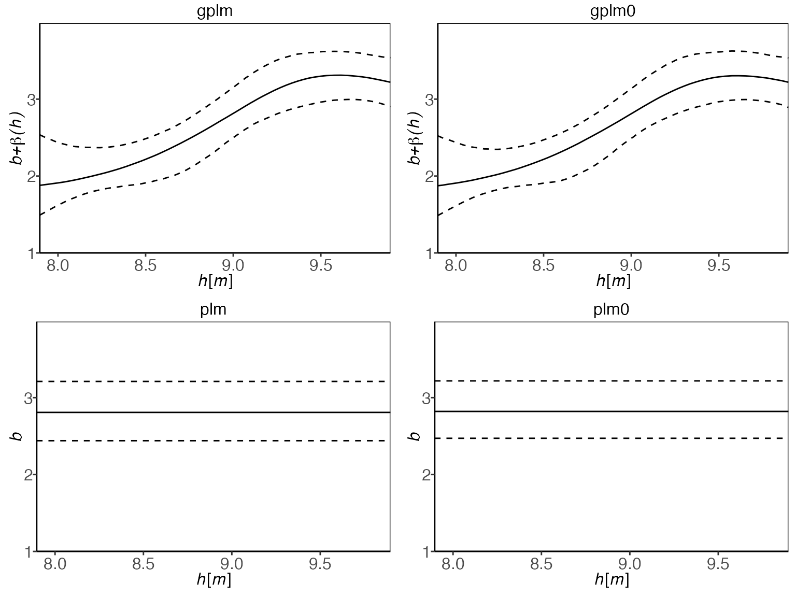
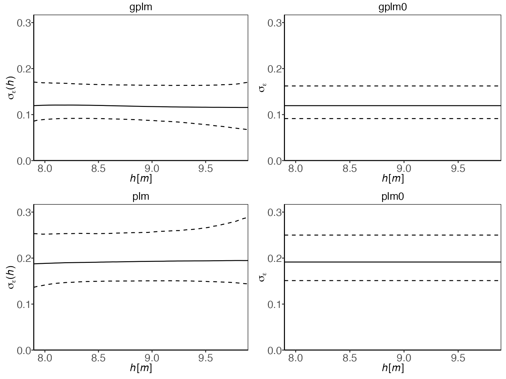

Tournament - Model comparison
Solvi Rognvaldsson, Rafael Daniel Vias, Birgir Hrafnkelsson and Axel Orn Jansson
Source:vignettes/tournament.Rmd
tournament.RmdThis vignette explores the ways you can compare the fit of the
different discharge rating curve models provided in the
bdrc package. The package includes four different models to
fit a discharge rating curve of different complexities. These are:
plm0()- Power-law model with constant log-error variance.plm()- Power-law model with stage-dependent log-error variance.gplm0()- Generalized power-law model with constant log-error variance.gplm()- Generalized power-law model with stage-dependent log-error variance.
The ‘0’ indicates that the variance of the log-transformed errors is
modeled as a constant. The plm0 model is simply a Bayesian
hierarchical implementation of the classical power-law model, widely
used in hydrological practice. For more details on these models, refer
to Hrafnkelsson et al. (2022). For an brief overview of the underlying
theory, see our Background vignette. For
guidance on applying these models to your data, refer to the Introduction vignette.
The tournament method
The tournament method uses the Widely Applicable Information Criterion (WAIC) (Watanabe, 2010) to select the most appropriate model for a given dataset. The WAIC balances two factors:
Goodness-of-fit: How well the model fits the observed data.
Model complexity: A penalty term accounting for the effective number of parameters.
A lower WAIC indicates a better balance between model fit and complexity, making it the preferred model.
The tournament process occurs in two rounds:
-
First round:
gplmvsgplm0plmvsplm0
-
Final round:
- Winners of the first round face off
In each comparison, we calculate the WAIC difference of the less and more complex model, . A positive suggests the more complex model is more appropriate. However, to advance to the next round, must exceed a pre-specified “winning criteria” (default value = 2). This threshold helps ensure that we only choose a more complex model if it offers a substantial improvement.
The default winning criteria of 2 is based on statistical guidelines
for model selection (Burnham & Anderson, 2002), balancing the
trade-off between model fit and complexity. It helps prevent overfitting
by requiring evidence to justify a more complex model. In the following
sections, we’ll provide code examples demonstrating how to conduct the
power-law tournament with your own data using the bdrc
package.
Introducing the Tournament Function
To demonstrate the tournament function, we’ll use a real-world
dataset from the Krokfors stream gauging station in Sweden, which is
included in the bdrc package:
> library(bdrc)
> data(krokfors)
> head(krokfors)
#> W Q
#> 1 9.478000 10.8211700
#> 2 8.698000 1.5010000
#> 3 9.009000 3.3190000
#> 4 8.097000 0.1595700
#> 5 9.104000 4.5462500
#> 6 8.133774 0.2121178The Krokfors dataset contains 27 observations of discharge measurements from a stream gauging station. Each observation consists of two variables:
W: Water level (stage) measured in meters above a fixed reference point.Q: Discharge, measured in cubic meters per second (m³/s).
The Krokfors data is particularly suitable for demonstrating the tournament function as it provides a real-world example of the type of data typically used in discharge rating curve analysis. The dataset will help illustrate how different models perform across the range of observed water levels and discharges.
Running a tournament
The tournament function is straightforward to use, requiring two main arguments:
formula: Specifies the relationship between discharge and water elevation (e.g.,Q ~ W).data: Adata.framewith column names corresponding to the variables specified in the formula.
It is very important that the discharge is represented in cubic meters per second (m³/s) and the water elevation in meters (m).
Let’s run our first tournament:
> set.seed(1) # set seed for reproducibility
> t_obj <- tournament(Q ~ W, krokfors, parallel = TRUE, num_cores = 2)
#> Running tournament [ ] 0%
#>
#> Progress:
#> Initializing Metropolis MCMC algorithm...
#> Multiprocess sampling (4 chains in 2 jobs) ...
#>
#> MCMC sampling completed!
#>
#> Diagnostics:
#> Acceptance rate: 25.33%.
#> ✔ All chains have mixed well (Rhat < 1.1).
#> ✔ Effective sample sizes sufficient (eff_n_samples > 400).
#>
#> ✔ gplm finished [============ ] 25%
#>
#> Progress:
#> Initializing Metropolis MCMC algorithm...
#> Multiprocess sampling (4 chains in 2 jobs) ...
#>
#> MCMC sampling completed!
#>
#> Diagnostics:
#> Acceptance rate: 31.14%.
#> ✔ All chains have mixed well (Rhat < 1.1).
#> ✔ Effective sample sizes sufficient (eff_n_samples > 400).
#>
#> ✔ gplm0 finished [======================== ] 50%
#>
#> Progress:
#> Initializing Metropolis MCMC algorithm...
#> Multiprocess sampling (4 chains in 2 jobs) ...
#>
#> MCMC sampling completed!
#>
#> Diagnostics:
#> Acceptance rate: 25.66%.
#> ✔ All chains have mixed well (Rhat < 1.1).
#> ✔ Effective sample sizes sufficient (eff_n_samples > 400).
#>
#> ✔ plm finished [==================================== ] 75%
#>
#> Progress:
#> Initializing Metropolis MCMC algorithm...
#> Multiprocess sampling (4 chains in 2 jobs) ...
#>
#> MCMC sampling completed!
#>
#> Diagnostics:
#> Acceptance rate: 36.04%.
#> ✔ All chains have mixed well (Rhat < 1.1).
#> ✔ Effective sample sizes sufficient (eff_n_samples > 400).
#>
#> ✔ plm0 finished [================================================] 100%This output provides valuable information about the MCMC sampling process for each model:
- Progress:
- Shows the overall progress of the tournament as each of the four models is fitted sequentially.
- Indicates the start of the Markov Chain Monte Carlo (MCMC) process for each model.
- Provides information on how the sampling process is being
distributed across your computer’s CPU cores. In this example, we see
that the 4 chain sampling process is being distributed across 2 CPU
cores (4 chains in 2 jobs).
- Diagnostics:
- Acceptance rate: The proportion of proposed parameter values that were accepted in the MCMC sampling scheme.
- Chain mixing: A message reporting if the different MCMC chains have mixed well.
- Effective sample size: A message reporting if enough independent samples have been drawn from the posterior distribution.
If some parameters do not meet the criteria for chain mixing or
effective sample size (Gelman-rubin statistic (Rhat) <
1.1 for mixing and effective number of samples
(eff_n_samples) > 400 for sample size), the function
will print out a warning. This helps you identify potential issues with
the MCMC sampling for specific parameters.
These diagnostics help ensure the reliability of our results. Good
chain mixing and sufficient effective sample sizes indicate that our
MCMC sampling has likely converged to the true posterior distribution.
The function can be made to run silently by setting
verbose = FALSE.
Note: By default, parallel=TRUE and the function
automatically detects the number of available cores. Parallel processing
is used to run multiple MCMC chains simultaneously, significantly
reducing computation time for complex models or large datasets.
To see the tournament winner:
If you’ve already fitted the four models separately and stored in
objects (e.g., plm0.fit, plm.fit,
gplm0.fit, gplm.fit), you can run the
tournament more efficiently:
The tournament function creates a tournament object which contains:
-
summary: A data frame with detailed information on the results of the different comparisons in the power-law tournament. The contents of this data frame depend on the method used ("WAIC","DIC", or"PMP") and include:-
Common columns for all methods:
-
round: Indicates the tournament round (1 or 2). Round 1 compares the generalized and classical power-law models separately (gplmvsgplm0andplmvsplm0), whereas Round 2 compares the winners from Round 1. -
comparison: A numeric identifier for each model comparison (1, 2, or 3). There are two comparisons in Round 1 and one in Round 2. -
complexity: Indicates whether a model is the “more” or “less” complex model in a given comparison. The “less” complex model is given the advantage defined by thewinning_criteria.
-
model: The model type (plm0,plm,gplm0, orgplm). -
winner: A logical value (TRUE/FALSE) indicating whether the model was selected as the winner.
-
-
Method-specific columns:
-
For
WAIC(Widely Applicable Information Criterion):-
lppd: Log-pointwise predictive density, measuring how well the model predicts the observed data -
eff_num_param: Effective number of parameters, estimating model complexity -
WAIC: The computed WAIC value, balancing model fit and complexity -
SE_WAIC: Standard error of the WAIC estimate -
Delta_WAIC: Difference in WAIC between compared models -
SE_Delta_WAIC: Standard error of the difference in WAIC
-
-
For
DIC(Deviance Information Criterion):-
D_hat: Minus two times the log-likelihood evaluated at the median of the posterior samples -
eff_num_param: Effective number of parameters, estimating model complexity -
DIC: The computed DIC value, balancing model fit and complexity -
Delta_DIC: Difference in DIC between compared models
-
-
For
PMP(Posterior Model Probability):-
log_marg_lik: Logarithm of the marginal likelihood, estimated using the harmonic-mean estimator -
PMP: Posterior model probability computed with Bayes factor, indicating the probability of each model given the data
-
-
-
contestants: A list containing all of the fitted model objects compared in the tournament,plm0,plm,gplm0andgplm.winner: The model object of the tournament winner, representing the most appropriate model given the data.-
info: A list containing specific information about the tournament:- The overall winner
- The method used for comparison (
"WAIC","DIC", or"PMP") - The winning criteria applied
This structure allows users to easily access both the final results (winner) and the detailed process (summary) of the model comparison, as well as the full model objects for further analysis if needed.
The method-specific columns provide insights into the model selection process: * For WAIC, lower values indicate better models, with Delta_WAIC showing the magnitude of difference between models. * For DIC, like WAIC, lower values are preferred, with Delta_DIC showing the difference between models. * For PMP, higher probabilities indicate stronger evidence for a model, with values closer to 1 suggesting stronger support.
These metrics help users understand not just which model was selected, but also the strength of evidence for that selection and the relative performance of all compared models.
For a more comprehensive summary of the tournament results:
> summary(t_obj)
#>
#> === Tournament Model Comparison Summary ===
#>
#> Method: WAIC
#> Winning Criteria: Delta_WAIC > 2
#> Overall Winner: gplm0
#>
#> Comparison 1 Results:
#> --------------------------------------------------------------------------------------------------
#> complexity model winner lppd eff_num_param WAIC SE_WAIC Delta_WAIC SE_Delta_WAIC
#> more gplm 20.7794 6.8706 -27.8176 11.8918 0.5570 0.2416
#> less gplm0 <--- 20.3710 6.7406 -27.2606 12.0360
#>
#> Comparison 2 Results:
#> --------------------------------------------------------------------------------------------------
#> complexity model winner lppd eff_num_param WAIC SE_WAIC Delta_WAIC SE_Delta_WAIC
#> more plm 5.5842 4.2574 -2.6536 6.6635 -0.4066 0.1904
#> less plm0 <--- 5.6284 4.0984 -3.0601 6.6931
#>
#> Comparison 3 Results:
#> --------------------------------------------------------------------------------------------------
#> complexity model winner lppd eff_num_param WAIC SE_WAIC Delta_WAIC SE_Delta_WAIC
#> more gplm0 <--- 20.3710 6.7406 -27.2606 12.0360 24.2005 9.1834
#> less plm0 5.6284 4.0984 -3.0601 6.6931
#>
#> === End of Summary ===The first round of the tournament favors gplm0 over
gplm, and plm0 over plm, based on
their respective
values. In the final round, gplm0 emerges as the overall
winner, with a substantial positive
of ~24 when compared to plm0. This indicates that
gplm0 provides the best balance between model complexity
and fit to the data.
The standard error of the estimated WAIC difference, denoted as
SE_Delta_WAIC, is rather large at ~9. This suggests some
uncertainty in the magnitude of this difference. However, it’s important
to note that despite the small sample size, the
SE_Delta_WAIC is less than half the
estimate. This provides some confidence in the preference for
gplm0, as the difference in WAIC is more than two standard
errors away from zero. Lets further investigate this comparison.
Visualizing the model comparisons
To gain deeper insights into the model comparison results, we can use various visualization tools:
1. Tournament results diagram:
![<em>A diagram showing the results of the power-law tournament. The diagram progresses from bottom (four initial models) to top (single winner). Each model's residual plot is shown at the bottom, with corresponding WAIC values above. Green WAIC values indicate the more parsimonious models in each comparison for these data. The first round selects gplm0 and plm0, which advance to the final comparison. gplm0 emerges as the tournament winner, indicated by its green WAIC value and the name at the top of the diagram.</em>](tournament_files/figure-html/unnamed-chunk-7-1.png)
This diagram illustrates the tournament progression from the initial four models to the final winner. It shows each model’s residual plot at the bottom, with corresponding WAIC values above. Green WAIC values indicate the selected model for each comparison.
2. Log-likelihood comparison:

This boxplot compares the posterior log-likelihood values for each model, with the corresponding WAIC values shown as red diamonds. The log-likelihood values are presented on the deviance scale (-2 * log-likelihood) for a direct comparison with WAIC. Lower values indicate better fit.
3. Rating curve comparison:
![A plot comparing the rating curves estimated by four models. The graph shows water level (stage) on the y-axis and discharge on the x-axis. Each model's estimated rating curve is represented by a solid line, with dotted lines showing the 95% prediction interval. This visualization enables assessment of model fit across the range of water levels, highlighting differences in predictive capabilities. Optimal performance is indicated by the solid line following the mean of observations and 95% of observations falling within the prediction interval.](tournament_files/figure-html/unnamed-chunk-9-1.png)
This plot compares the estimated rating curves from all four models. It shows water level (stage) vs. discharge, with solid lines representing the estimated curves and dotted lines showing 95% prediction intervals. This visualization helps assess model fit across different water levels. Optimal model fit is indicated by the solid line following the mean of observations and 95% of observations falling within the prediction interval.
4. Residual plot comparison:

The residual plots also help assess how well each model fits the data by showing differences between observed and predicted values across water levels. This can reveal patterns in model performance and highlight any systematic under- or over-predictions. Optimal model fit is indicated by the rating curve mean (solid horizontal line) following the mean of the observations, and 95% of observations falling within the 95% prediction interval (dotted lines).
5. Model Component Comparisons:
The differences between the four models lie in the treatment of the power-law exponent, , and the log-error standard deviation, , as either constants or stage-dependent functions. Therefore, it is insightful to examine the posterior distributions of these elements across the different models to determine whether stage dependence exists or if the assumption of constancy is appropriate.
Power-law exponent comparison:

The plots show that the exponent is clearly not constant over the
water elevations. This observation supports the use of the generalized
power-law models (gplm and gplm0) over the
classical power-law models (plm and plm0), as
they allow for this non-constant behavior of the power-law exponent.
Log-error standard deviation comparison:

In contrast to the exponent, the log-error standard deviation does
not show a clear non-constant trend over the water elevations. This
observation suggests that models with constant error variance
(plm0 and gplm0) might be sufficient for this
dataset, aligning with the tournament results that selected
gplm0.
6. Winning model panel:
Finally, the panel option is useful to gain insight into
all different model components of the winning model, which in this case
is gplm0:

This panel plot provides a comprehensive view of the winning model’s
components, including the rating curve, residuals, power-law exponent,
and the log-error standard deviation. This visualization is particularly
useful for understanding how the different elements of the winning model
work together and how they relate to the observed data. The
transformed = TRUE argument transforms the rating curve and
observations onto the modeling scale (log-scale).
Customizing tournaments
There are several ways to customize the tournament further:
1. Fixing the c parameters:
If the parameter of zero discharge is known, you might want to fix that parameter to the known value in the model. Assume m is the known value of . Then you can directly run a tournament with the parameter fixed in all the models:
2. Adjusting the winning criteria:
You can change the winning criteria (default value = 2) which sets
the threshold that the more complex model in each model comparison must
exceed. For example, increasing the value to
winning_criteria = 5 raises the threshold, thus favoring
model simplicity more. To re-evaluate a previously run tournament using
a different winning criteria, you can simply the summary
function:
> summary(t_obj, winning_criteria = 5)
#>
#> === Tournament Model Comparison Summary ===
#>
#> Method: WAIC
#> Winning Criteria: Delta_WAIC > 5
#> Overall Winner: gplm0
#>
#> Comparison 1 Results:
#> --------------------------------------------------------------------------------------------------
#> complexity model winner lppd eff_num_param WAIC SE_WAIC Delta_WAIC SE_Delta_WAIC
#> more gplm 20.7794 6.8706 -27.8176 11.8918 0.5570 0.2416
#> less gplm0 <--- 20.3710 6.7406 -27.2606 12.0360
#>
#> Comparison 2 Results:
#> --------------------------------------------------------------------------------------------------
#> complexity model winner lppd eff_num_param WAIC SE_WAIC Delta_WAIC SE_Delta_WAIC
#> more plm 5.5842 4.2574 -2.6536 6.6635 -0.4066 0.1904
#> less plm0 <--- 5.6284 4.0984 -3.0601 6.6931
#>
#> Comparison 3 Results:
#> --------------------------------------------------------------------------------------------------
#> complexity model winner lppd eff_num_param WAIC SE_WAIC Delta_WAIC SE_Delta_WAIC
#> more gplm0 <--- 20.3710 6.7406 -27.2606 12.0360 24.2005 9.1834
#> less plm0 5.6284 4.0984 -3.0601 6.6931
#>
#> === End of Summary ===For the method "WAIC", you can also specify a more
complex winning criteria as a string expression:
> summary(t_obj, winning_criteria = "Delta_WAIC > 2 & Delta_WAIC - SE_Delta_WAIC > 0")
#>
#> === Tournament Model Comparison Summary ===
#>
#> Method: WAIC
#> Winning Criteria: Delta_WAIC > 2 & Delta_WAIC - SE_Delta_WAIC > 0
#> Overall Winner: gplm0
#>
#> Comparison 1 Results:
#> --------------------------------------------------------------------------------------------------
#> complexity model winner lppd eff_num_param WAIC SE_WAIC Delta_WAIC SE_Delta_WAIC
#> more gplm 20.7794 6.8706 -27.8176 11.8918 0.5570 0.2416
#> less gplm0 <--- 20.3710 6.7406 -27.2606 12.0360
#>
#> Comparison 2 Results:
#> --------------------------------------------------------------------------------------------------
#> complexity model winner lppd eff_num_param WAIC SE_WAIC Delta_WAIC SE_Delta_WAIC
#> more plm 5.5842 4.2574 -2.6536 6.6635 -0.4066 0.1904
#> less plm0 <--- 5.6284 4.0984 -3.0601 6.6931
#>
#> Comparison 3 Results:
#> --------------------------------------------------------------------------------------------------
#> complexity model winner lppd eff_num_param WAIC SE_WAIC Delta_WAIC SE_Delta_WAIC
#> more gplm0 <--- 20.3710 6.7406 -27.2606 12.0360 24.2005 9.1834
#> less plm0 5.6284 4.0984 -3.0601 6.6931
#>
#> === End of Summary ===This criteria requires that the difference in WAIC is greater than 2 and that this difference minus its standard error is greater than 0, providing a more conservative approach to model selection.
Note: Only Delta_WAIC and SE_Delta_WAIC are
allowed as variables in the winning_criteria expressions.
3. Changing the model comparison method:
The default method is "WAIC", but you can also use
"DIC" or "PMP":
-
"WAIC"(default):WAIC (Watanabe, 2010) is a fully Bayesian method that uses the full set of posterior draws to calculate the best possible estimate of the expected log pointwise predictive density.
-
"DIC":DIC (Spiegelhalter, 2002) is similar to WAIC but uses a point estimate of the posterior distribution instead of the full set of posterior draws.
> summary(t_obj, method = "DIC")
#>
#> === Tournament Model Comparison Summary ===
#>
#> Method: DIC
#> Winning Criteria: Delta_DIC > 2
#> Overall Winner: gplm0
#>
#> Comparison 1 Results:
#> --------------------------------------------------------------------------
#> complexity model winner D_hat eff_num_param DIC Delta_DIC
#> more gplm -42.7732 6.0631 -30.6471 0.8498
#> less gplm0 <--- -42.4880 6.3454 -29.7972
#>
#> Comparison 2 Results:
#> --------------------------------------------------------------------------
#> complexity model winner D_hat eff_num_param DIC Delta_DIC
#> more plm -11.3400 2.9739 -5.3923 -0.3058
#> less plm0 <--- -11.4712 2.8865 -5.6982
#>
#> Comparison 3 Results:
#> --------------------------------------------------------------------------
#> complexity model winner D_hat eff_num_param DIC Delta_DIC
#> more gplm0 <--- -42.4880 6.3454 -29.7972 24.0991
#> less plm0 -11.4712 2.8865 -5.6982
#>
#> === End of Summary ===-
"PMP"(posterior model probabilities):The posterior model probabilities are computed with Bayes factors (Jeffreys, 1961; Kass and Raftery, 1995), assuming all models are equally likely a priori. The winning criteria for method
"PMP"should be between 0 and 1, representing the threshold for the posterior probability of the more complex model. The default is 0.75, which should give similar results to the other two methods with their respective default values of 2. The method"PMP"is not chosen as the default method because the Bayes factor calculations can be quite unstable. Let’s now use this method, but raise the winning criteria from 0.75 to 0.9
> summary(t_obj, method = "PMP", winning_criteria = 0.9)
#>
#> === Tournament Model Comparison Summary ===
#>
#> Method: PMP
#> Winning Criteria: PMP of more complex model > 0.9
#> Overall Winner: gplm0
#>
#> Comparison 1 Results:
#> -------------------------------------------------------
#> complexity model winner log_marg_lik PMP
#> more gplm 10.1504 0.4538
#> less gplm0 <--- 10.3357 0.5462
#>
#> Comparison 2 Results:
#> -------------------------------------------------------
#> complexity model winner log_marg_lik PMP
#> more plm <--- 0.9781 0.9260
#> less plm0 -1.5486 0.0740
#>
#> Comparison 3 Results:
#> -------------------------------------------------------
#> complexity model winner log_marg_lik PMP
#> more gplm0 <--- 10.3357 0.9999
#> less plm 0.9781 0.0001
#>
#> === End of Summary ===
#>
#> ⚠ Warning: The Harmonic Mean Estimator (HME) is used to estimate the Bayes Factor for the posterior model probability (PMP), which is known to be unstable and potentially unreliable. We recommend using method "WAIC" (Widely Applicable Information Criterion) for model comparison instead.Note that when using the summary function to change the method or winning criteria, the tournament is re-run with the new parameters using the original contestant models. This allows for efficient comparison of different methods or criteria without having to refit the models.
These examples demonstrate how different methods and winning criteria can be applied to model comparison. While it’s valuable to explore these options, we generally recommend using the WAIC method, as it provides a robust and theoretically sound approach to model selection. WAIC uses the full posterior distribution and is particularly well-suited for hierarchical models.
In the case of the Krokfors dataset, we see that the results of the
tournament do not change despite these customizations, and the winner of
the third and final comparison is still gplm0. This
consistency across different methods and criteria suggests that
gplm0 is indeed the most appropriate model for this
particular dataset.
References
Burnham, K. P. and Anderson, D. R. (eds) (2002). Information and Likelihood Theory: A Basis for Model Selection and Inference. New York, NY: Springer New York. 49–97, doi: https://doi.org/10.1007/978-0-387-22456-5_2
Hrafnkelsson, B., Sigurdarson, H., Rögnvaldsson, S., Jansson, A. Ö., Vias, R. D., and Gardarsson, S. M. (2022). Generalization of the power-law rating curve using hydrodynamic theory and Bayesian hierarchical modeling, Environmetrics, 33(2):e2711. doi: https://doi.org/10.1002/env.2711
Jeffreys, H. (1961). Theory of Probability, Third Edition. Oxford University Press.
Kass, R., and A. Raftery, A. (1995). Bayes Factors. Journal of the American Statistical Association, 90, 773-795. doi: https://doi.org/10.1080/01621459.1995.10476572
Spiegelhalter, D., Best, N., Carlin, B., Van Der Linde, A. (2002). Bayesian measures of model complexity and fit. Journal of the Royal Statistical Society: Series B (Statistical Methodology) 64(4), 583–639. doi: https://doi.org/10.1111/1467-9868.00353
Watanabe, S. (2010). Asymptotic equivalence of Bayes cross validation and widely applicable information criterion in singular learning theory. Journal of Machine Learning Research, 11, 3571–3594.